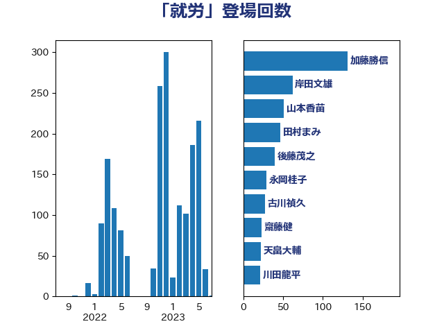

単語「就労」

| 加藤勝信 | 自由民主党 | 131 回 |
| 岸田文雄 | 自由民主党 | 62 回 |
| 山本香苗 | 公明党 | 51 回 |
| 田村まみ | 国民民主党 | 47 回 |
| 後藤茂之 | 自由民主党 | 40 回 |
| 永岡桂子 | 自由民主党 | 29 回 |
| 古川禎久 | 自由民主党 | 27 回 |
| 齋藤健 | 自由民主党 | 23 回 |
| 天畠大輔 | れいわ新選組 | 22 回 |
| 川田龍平 | 立憲民主党 | 21 回 |
| 中島克仁 | 立憲民主党 | 21 回 |
| 田中健 | 国民民主党 | 20 回 |
| 小倉將信 | 自由民主党 | 20 回 |
| 仁木博文 | 無所属 | 20 回 |
| 竹谷とし子 | 公明党 | 19 回 |
| 宮本徹 | 日本共産党 | 18 回 |
| 金城泰邦 | 公明党 | 17 回 |
| 谷合正明 | 公明党 | 16 回 |
| 池下卓 | 日本維新の会 | 16 回 |
| 中川正春 | 立憲民主党 | 14 回 |
| 野田聖子 | 自由民主党 | 13 回 |
| 舩後靖彦 | れいわ新選組 | 13 回 |
| 打越さく良 | 立憲民主党 | 13 回 |
| 友納理緒 | 自由民主党 | 12 回 |
| 河野太郎 | 自由民主党 | 10 回 |
| 早稲田ゆき | 立憲民主党 | 10 回 |
| 宮本岳志 | 日本共産党 | 10 回 |
| 塩川鉄也 | 日本共産党 | 10 回 |
| 高橋光男 | 公明党 | 9 回 |
| 田中昌史 | 自由民主党 | 9 回 |
| 金村龍那 | 日本維新の会 | 8 回 |
| 石橋通宏 | 立憲民主党 | 8 回 |
| 東徹 | 日本維新の会 | 8 回 |
| 山添拓 | 日本共産党 | 8 回 |
| 宮口治子 | 立憲民主党 | 8 回 |
| 吉良よし子 | 日本共産党 | 8 回 |
| 伊藤孝恵 | 国民民主党 | 8 回 |
| 長友慎治 | 国民民主党 | 7 回 |
| 鈴木義弘 | 国民民主党 | 7 回 |
| 鈴木庸介 | 立憲民主党 | 7 回 |
| 芳賀道也 | 国民民主党 | 7 回 |
| 安江伸夫 | 公明党 | 7 回 |
| 吉田久美子 | 公明党 | 7 回 |
| 角田秀穂 | 公明党 | 6 回 |
| 山際大志郎 | 自由民主党 | 6 回 |
| 堀場幸子 | 日本維新の会 | 6 回 |
| 倉林明子 | 日本共産党 | 6 回 |
| 高橋英明 | 日本維新の会 | 5 回 |
| 道下大樹 | 立憲民主党 | 5 回 |
| 川合孝典 | 国民民主党 | 5 回 |
| 山田勝彦 | 立憲民主党 | 5 回 |
| 山崎正恭 | 公明党 | 5 回 |
| 佐藤英道 | 公明党 | 5 回 |
| 今井絵理子 | 自由民主党 | 5 回 |
| 井坂信彦 | 立憲民主党 | 5 回 |
| 中野洋昌 | 公明党 | 5 回 |
| 須藤元気 | 無所属 | 4 回 |
| 西銘恒三郎 | 自由民主党 | 4 回 |
| 緒方林太郎 | 無所属 | 4 回 |
| 空本誠喜 | 日本維新の会 | 4 回 |
| 畦元将吾 | 自由民主党 | 4 回 |
| 田村智子 | 日本共産党 | 4 回 |
| 清水貴之 | 日本維新の会 | 4 回 |
| 松野明美 | 日本維新の会 | 4 回 |
| 東国幹 | 自由民主党 | 4 回 |
| 掘井健智 | 日本維新の会 | 4 回 |
| 岸真紀子 | 立憲民主党 | 4 回 |
| 大口善徳 | 公明党 | 4 回 |
| 加藤鮎子 | 自由民主党 | 4 回 |
| 中条きよし | 日本維新の会 | 4 回 |
| 高木かおり | 日本維新の会 | 3 回 |
| 階猛 | 立憲民主党 | 3 回 |
| 阿部司 | 日本維新の会 | 3 回 |
| 鈴木俊一 | 自由民主党 | 3 回 |
| 野村哲郎 | 自由民主党 | 3 回 |
| 菊田真紀子 | 立憲民主党 | 3 回 |
| 米山隆一 | 立憲民主党 | 3 回 |
| 穂坂泰 | 自由民主党 | 3 回 |
| 石川大我 | 立憲民主党 | 3 回 |
| 石井苗子 | 日本維新の会 | 3 回 |
| 田村貴昭 | 日本共産党 | 3 回 |
| 瀬戸隆一 | 自由民主党 | 3 回 |
| 清水真人 | 自由民主党 | 3 回 |
| 津島淳 | 自由民主党 | 3 回 |
| 柚木道義 | 立憲民主党 | 3 回 |
| 宮路拓馬 | 自由民主党 | 3 回 |
| 大家敏志 | 自由民主党 | 3 回 |
| 加田裕之 | 自由民主党 | 3 回 |
| 三ッ林裕巳 | 自由民主党 | 3 回 |
| 高見康裕 | 自由民主党 | 2 回 |
| 高木宏壽 | 自由民主党 | 2 回 |
| 阿部知子 | 立憲民主党 | 2 回 |
| 阿部弘樹 | 日本維新の会 | 2 回 |
| 鎌田さゆり | 立憲民主党 | 2 回 |
| 鈴木英敬 | 自由民主党 | 2 回 |
| 鈴木敦 | 国民民主党 | 2 回 |
| 野間健 | 立憲民主党 | 2 回 |
| 野田国義 | 立憲民主党 | 2 回 |
| 西村智奈美 | 立憲民主党 | 2 回 |
| 萩生田光一 | 自由民主党 | 2 回 |
| 自見はなこ | 自由民主党 | 2 回 |
| 簗和生 | 自由民主党 | 2 回 |
| 福山哲郎 | 立憲民主党 | 2 回 |
| 神谷政幸 | 自由民主党 | 2 回 |
| 石川博崇 | 公明党 | 2 回 |
| 石原正敬 | 自由民主党 | 2 回 |
| 矢倉克夫 | 公明党 | 2 回 |
| 田畑裕明 | 自由民主党 | 2 回 |
| 田所嘉徳 | 自由民主党 | 2 回 |
| 玉木雄一郎 | 国民民主党 | 2 回 |
| 熊谷裕人 | 立憲民主党 | 2 回 |
| 漆間譲司 | 日本維新の会 | 2 回 |
| 浅野哲 | 国民民主党 | 2 回 |
| 泉健太 | 立憲民主党 | 2 回 |
| 沢田良 | 日本維新の会 | 2 回 |
| 櫛渕万里 | れいわ新選組 | 2 回 |
| 森山浩行 | 立憲民主党 | 2 回 |
| 森屋隆 | 立憲民主党 | 2 回 |
| 梅村みずほ | 日本維新の会 | 2 回 |
| 柘植芳文 | 自由民主党 | 2 回 |
| 本村伸子 | 日本共産党 | 2 回 |
| 木村英子 | れいわ新選組 | 2 回 |
| 木原誠二 | 自由民主党 | 2 回 |
| 山本博司 | 公明党 | 2 回 |
| 山口那津男 | 公明党 | 2 回 |
| 宮崎勝 | 公明党 | 2 回 |
| 塩崎彰久 | 自由民主党 | 2 回 |
| 和田義明 | 自由民主党 | 2 回 |
| 吉田とも代 | 日本維新の会 | 2 回 |
| 勝俣孝明 | 自由民主党 | 2 回 |
| 中川宏昌 | 公明党 | 2 回 |
| 下野六太 | 公明党 | 2 回 |
| 鰐淵洋子 | 公明党 | 1 回 |
| 鬼木誠 | 立憲民主党 | 1 回 |
| 高橋千鶴子 | 日本共産党 | 1 回 |
| 鈴木貴子 | 自由民主党 | 1 回 |
| 里見隆治 | 公明党 | 1 回 |
| 遠藤良太 | 日本維新の会 | 1 回 |
| 輿水恵一 | 公明党 | 1 回 |
| 赤嶺政賢 | 日本共産党 | 1 回 |
| 豊田俊郎 | 自由民主党 | 1 回 |
| 藤岡隆雄 | 立憲民主党 | 1 回 |
| 葉梨康弘 | 自由民主党 | 1 回 |
| 羽生田俊 | 自由民主党 | 1 回 |
| 竹詰仁 | 国民民主党 | 1 回 |
| 竹内譲 | 公明党 | 1 回 |
| 窪田哲也 | 公明党 | 1 回 |
| 稲富修二 | 立憲民主党 | 1 回 |
| 秋野公造 | 公明党 | 1 回 |
| 福島みずほ | 社会民主党 | 1 回 |
| 磯崎仁彦 | 自由民主党 | 1 回 |
| 石井啓一 | 公明党 | 1 回 |
| 生稲晃子 | 自由民主党 | 1 回 |
| 牧義夫 | 立憲民主党 | 1 回 |
| 牧島かれん | 自由民主党 | 1 回 |
| 片山大介 | 日本維新の会 | 1 回 |
| 渡辺博道 | 自由民主党 | 1 回 |
| 浜口誠 | 国民民主党 | 1 回 |
| 河野義博 | 公明党 | 1 回 |
| 水岡俊一 | 立憲民主党 | 1 回 |
| 横沢高徳 | 立憲民主党 | 1 回 |
| 柴田巧 | 日本維新の会 | 1 回 |
| 柴山昌彦 | 自由民主党 | 1 回 |
| 柳ヶ瀬裕文 | 日本維新の会 | 1 回 |
| 松野博一 | 自由民主党 | 1 回 |
| 杉久武 | 公明党 | 1 回 |
| 本庄知史 | 立憲民主党 | 1 回 |
| 早坂敦 | 日本維新の会 | 1 回 |
| 日下正喜 | 公明党 | 1 回 |
| 斎藤アレックス | 国民民主党 | 1 回 |
| 斉藤鉄夫 | 公明党 | 1 回 |
| 庄子賢一 | 公明党 | 1 回 |
| 平沼正二郎 | 自由民主党 | 1 回 |
| 平木大作 | 公明党 | 1 回 |
| 島村大 | 自由民主党 | 1 回 |
| 岩渕友 | 日本共産党 | 1 回 |
| 岡田直樹 | 自由民主党 | 1 回 |
| 岡本あき子 | 立憲民主党 | 1 回 |
| 山田宏 | 自由民主党 | 1 回 |
| 山下貴司 | 自由民主党 | 1 回 |
| 小野泰輔 | 日本維新の会 | 1 回 |
| 小寺裕雄 | 自由民主党 | 1 回 |
| 守島正 | 日本維新の会 | 1 回 |
| 塩田博昭 | 公明党 | 1 回 |
| 堤かなめ | 立憲民主党 | 1 回 |
| 城内実 | 自由民主党 | 1 回 |
| 城井崇 | 立憲民主党 | 1 回 |
| 坂本祐之輔 | 立憲民主党 | 1 回 |
| 嘉田由紀子 | 無所属 | 1 回 |
| 吉田宣弘 | 公明党 | 1 回 |
| 吉田はるみ | 立憲民主党 | 1 回 |
| 古賀篤 | 自由民主党 | 1 回 |
| 古賀千景 | 立憲民主党 | 1 回 |
| 勝部賢志 | 立憲民主党 | 1 回 |
| 勝目康 | 自由民主党 | 1 回 |
| 佐々木紀 | 自由民主党 | 1 回 |
| 伊藤岳 | 日本共産党 | 1 回 |
| 伊佐進一 | 公明党 | 1 回 |
| 井上哲士 | 日本共産党 | 1 回 |
| 上野通子 | 自由民主党 | 1 回 |
| 上田勇 | 公明党 | 1 回 |
| 上月良祐 | 自由民主党 | 1 回 |
| ながえ孝子 | 無所属 | 1 回 |
| こやり隆史 | 自由民主党 | 1 回 |
| おおつき紅葉 | 立憲民主党 | 1 回 |